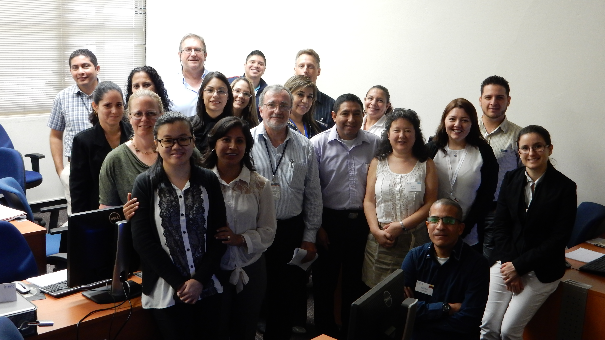
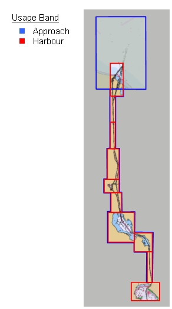
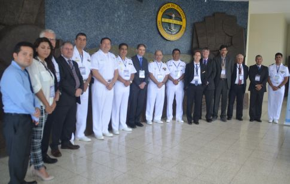
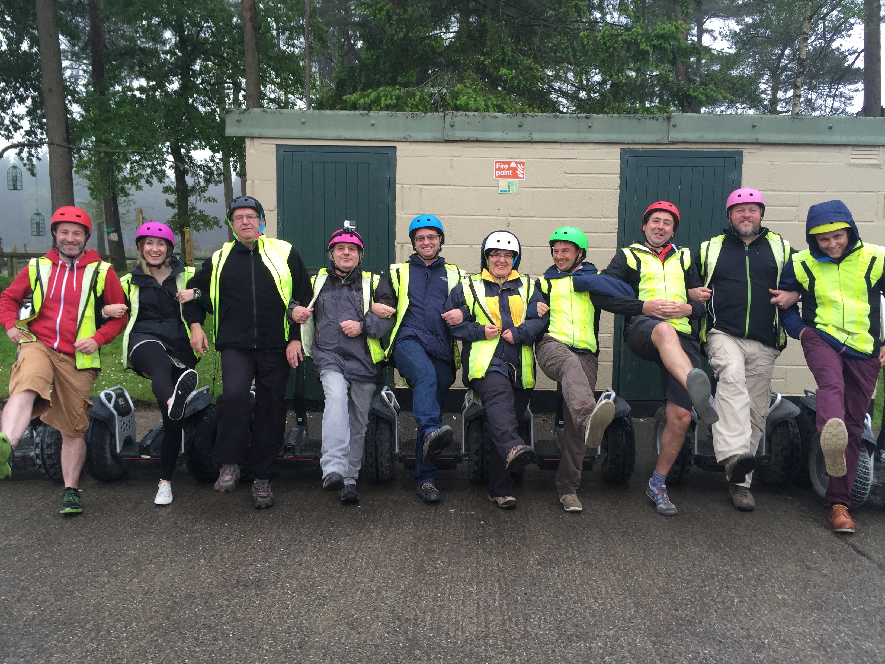

| play_arrow |
21 - 30 |
play_arrow |
2015
14/10
IC-ENC supports its members with training and ChartWorld ECDIS software to enhance ENC quality
IC-ENC has selected the new ChartWorld eGlobe G2 ECDIS as a tool to provide their 37 member nations with to supplement ENC production and validation processes. This will give each member Hydrographic Office the opportunity to load their ENCs into an ECDIS in order that the maritime user's perspective can be considered and to check its interoperability with adjacent data.
The SevenCs display engine inside the ChartWorld eGlobe G2 ECDIS is used by 30% of all ECDIS and ECS users within the SOLAS market, allowing IC-ENC and its members to make a representative data assessment on a user friendly ECDIS, whilst following the latest performance standards. The ChartWorld eGlobe G2 ECDIS software will be supplied to those member nations following attendance on IC-ENC's International ENC Validation training course.
IC-ENC has delivered three International ENC Validation training courses this year, each held in a different part of the world. The first training course was held in Taunton, UK, in February 2015. The second was held in Wollongong, Australia, in May, and the third course has just been delivered in Panama, Central America during September. The course provides its members with the knowledge and skills required to perform data validation at their home ENC production offices. The training course runs for a period of two weeks, and runs through the entire ENC Validation process from start to finish, as well as providing an overview of IC-ENC's additional three core services: ENC production support, ENC distribution and ENC revenue management. One specific element of the course is designed to enable each user to gain the maximum benefit from the ChartWorld eGlobe G2 ECDIS.
The Slovenian Hydrographic Office commented: "The most useful parts of the course were being able to get to know the whole process of validation from start to finish, and meeting IC-ENC staff members and representatives of other Hydrographic Office to exchange information and experiences amongst ourselves".
IC-ENC will be holding three further training courses in 2016, for which a further ECDIS delivery schedule plan will be implemented.
Email a link
2015
01/10
September/October
It feels like it's been a long time since my last blog, so I have plenty of IC-ENC activities to update you all on!
Mike Hawes, IC-ENC Course Trainer/Data Manager has just delivered the third and final IC-ENC ENC Validation Training Course of 2015 (bronze level). The course was held in Panama for a period of two weeks, from 14th – 25th September. The course was delivered to 18 delegates from Argentina, Brazil, Chile, Colombia, Cuba, Ecuador, Panama Canal Authority, Panama Maritime Authority, Peru, Suriname, Uruguay, United States, and Venezuela.
On behalf of the whole IC-ENC team, I'd like to say a big thank you to the Panama Canal Authority, in particular Jaime Rodriguez, for offering IC-ENC their training facilities to host the training course.

×

Panama Training Course Delegates and IC-ENC Course Trainer, Mike Hawes
Richard Northover, IC-ENC Commercial Manager, attended the World ECDIS Day event, which was held in Hamburg on 16th September. Richard briefed three groups of shipping companies, OEM reps and members of the shipping community. He also gave a joint RENC presentation with Hans Lauritzen, PRIMAR Director, which was well received.
The annual IC-ENC Steering Committee meeting took place on 7th and 8th September in Munich, Germany. We had a record number of 51 attendees, representing 31 out of our 36 member Hydrographic offices. The meeting was very successful, with some good discussions and decisions made, and the minutes from the meeting have now been circulated for review. If you have any comments or questions regarding the minutes, please email me on laura.tyzack@ic-enc.org (cc: therenc@ic-enc.org) by Friday 2nd October.

×

Steering Committee 16 Participants
We are excited to announce our latest IC-ENC member developments: Israel, Oman and NOAA (US). The Survey of Israel (SOI) joined as our 36th member in August. We will be working with SOI to develop its in-house production capabilities in order to assist in the production and maintenance of their ENC data. The Oman National Hydrographic Office (ONHO) joined as our 37th member during the Steering Committee meeting. ONHO currently has seven ENCs, and IC-ENC will provide further support in order to assist the development of its in-house ENC production capabilities. In addition, the National Oceanic and Atmospheric Administration (NOAA) have entered into the initial phase of becoming our 38th member. This decision was reached following the Steering Committee's endorsement of the proposal to establish a fourth IC-ENC regional office in Washington, DC, USA, as well as the approval of NOAA's intended membership. The membership arrangements and inclusion of the new office into IC-ENC's global operating framework are now subject to further analysis and development by both the NOAA and IC-ENC teams. Further announcements will be made in due course.
Lastly, whilst we're on the subject of IC-ENC regional offices, I thought I'd take this opportunity to update you all on the progress being made at the IC-ENC Latin America regional office in Niteroi, Brazil. The office accommodation has now been established, and the appointed staff members are now working in the office and taking part in regular online meetings with IC-ENC HQ. The two appointed Data Validators have just completed the bronze level training course in Panama, and formal gold level training is planned to be held in Taunton at a later date.

×

IC-ENC Latin America Staff
Email a link
2015
24/09
IC-ENC and UNITED STATES OF AMERICA (NOAA) to develop a collaborative partnership
IC-ENC is proud to announce that the National Oceanic and Atmospheric Administration (NOAA) have entered into the initial phase of becoming the 38th national hydrographic office to join its rapidly increasing family of members.
The 2015 IC-ENC annual Steering Committee meeting in Munich, Germany approved NOAA's intended membership of IC-ENC and endorsed a proposal for NOAA and IC-ENC to establish a fourth regional office of IC-ENC in Washington, DC, USA.
The membership arrangements, and the inclusion of the new office into IC-ENC's global operating framework, are now subject to detailed analysis and development by the NOAA and IC-ENC teams. Further announcements will follow as the IC-ENC North America office develops full operating capability during 2016.
NOAA currently produces and maintains over 1000 ENCs. IC-ENC's Production Support including Capacity Building (Training) and Independent Validation services will be delivered to NOAA via the IC-ENC North America office. The NOAA ENCs will form part of the global IC-ENC folio, and be included in IC-ENC's ENC Distribution service, achieved through the main IC-ENC office in the UK,
IC-ENC is looking forward to working in partnership with NOAA and assisting in sustaining this important ENC coverage.

Email a link
2015
09/09
IC-ENC Welcomes OMAN as its 37th Member
IC-ENC welcomes Oman National Hydrographic Office (ONHO), which has become the 37th national Hydrographic Office to join its rapidly increasing family of members. This was achieved by the signing of documentation during IC-ENCs annual Steering Committee meeting, in 2015 taking place in Munich, Germany.
ONHO currently has 7 ENCs, and IC-ENC intends to provide further support in order to assist and develop its in-house ENC production capacity. This will be achieved through IC-ENC's Production Support, Independent Validation and Capacity Building (Training) services.
IC-ENC is looking forward to working in partnership with ONHO and assisting in the development of this important ENC coverage.


Email a link
2015
24/08
World ECDIS Day 2015
IC-ENC is looking forward to presenting at World ECDIS Day, which will be held in Hamburg on 16th September 2015. It will be a great opportunity to exchange ideas, evaluate problems and explore future visions related to e-navigation and ECDIS.
Email a link
2015
13/08
Israel becomes 36th member of IC-ENC
IC-ENC welcomes Survey of Israel (SOI), which has become the 36th national Hydrographic Office to join the rapidly increasing family of members.
SOI currently has one ENC, and IC-ENC intends to provide close support in order to assist and develop its in-house ENC production capacity. This will be achieved through IC-ENC's Production Support, Independent Validation and Capacity Building (Training) services.
IC-ENC is looking forward to working in partnership with SOI and assisting in the development of this important ENC coverage.

Email a link
2015
13/08
Steering Committee 16 - Discussion Papers
The Steering Committee 16 Discussion Papers are now available through the Hydrographic Offices area of this website.
To access and download the discussion papers, please go to the Hydrographic Offices area and log in using your username and password. Next, click on the 'SC16 Website' link to take you to the Steering Committee 16 homepage. The discussion papers can then be found within the 'SC16 Documents' folder on the homepage.
We are looking forward to seeing you all in September.
Email a link
2015
10/08
New ENC Coverage for the Suez Canal
IC-ENC is excited to announce that the Egyptian Naval Hydrographic Department (ENHD) have produced their first 12 ENCs (10 Harbour and 2 Approach), which seamlessly cover the waters of the Suez Canal. IC-ENC has been working closely with ENHD to assist in the production of these new ENCs, both through attendance of the IC-ENC ENC Validation Training Course in February 2015, and through telephone and email support on a regular basis. ENHD have also been working in partnership with the Suez Canal Authority (SCA) to ensure that the release of these new ENCs align with the opening of the new and important 35km second channel within the Suez Canal on 6th August 2015. These ENCs will provide flexibility and usability at different scales throughout the whole canal.
.jpg)
×

The official opening took place at 15:00 local time on 6th August, which saw El Horreya, a Royal Egyptian yacht, take the first transit from south to north using the new channel. In the evening there was a performance of Aida, an opera written by Guiseppe Verdi, which was also performed at the original opening of the Suez Canal in 1869.
This is the greatest expansion of the canal since it first opened in 1869, costing $8 billion. The works involved 12 months of dredging using 45 dredgers, which has resulted in the removal of approximately 250 million cubic meters of soil. Previously a single lane, the canal can now facilitate traffic in two directions in almost 45% of its length, thus reducing transit time from 18 hours to 11 hours. As a result, waiting times have been minimised to just three hours, allowing the transit of 45 vessels in two directions, and increasing the maximum permissible vessel draft to 66ft throughout the canal.
With the daily average of transiting vessels expected to double, this important expansion of the Suez Canal will help to support and enhance increasing world trade.

×


×

Email a link
2015
04/08
August
It's been another busy month for IC-ENC, with new staff members, various international meetings and visits, Steering Committee preparations, and no let up on the data front.
IC-ENC attended two Hydrographic Commissions this month. James attended the Mediterranean and Black Sea Hydrographic Commission meeting (MBSHC), held in Batumi, Georgia from 29th June - 2nd July. It was a productive meeting with good discussions regarding ENHD and IC-ENC's combined efforts on ENC production in the Suez Canal, and ENC scheming in the general area.

×

Subsequently, Richard Fowle attended the South East Pacific Hydrographic Commission meeting (SEPHC), held in Guayaquil, Ecuador from 13th – 16th July. Richard updated the commission on IC-ENC's capacity building initiatives, including the IC-ENC International Validation training course, and also on IC-ENC's revised policy regarding overlapping data and areas of responsibility. Richard also spent some time discussing new ENC production plans with Ecuador.

×

South East Pacific Hydrographic Commission (SEPHC 12) 13th - 16th July, Guayaquil, Ecuador
Dan Garratt, IC-ENC Data Validator, has recently gained promotion to IC-ENC Senior Data Validator following a successful interview. The main objectives of the IC-ENC Senior Data Validator role are to maintain the IC-ENC documentation which underpins the IC-ENC Production Support and ENC Validation services; carry out IC-ENC Production Support and Validation services when required; to achieve and maintain ISO9001 quality management certification for all IC-ENC operations across all IC-ENC offices; and to develop the culture of customer focus and continual improvement across the IC-ENC organisation.
This month, we also held a secondment for Gailen Helga Pietersen, an employee of the South African Navy Hydrographic Office (SANHO), from 6th – 10th July. Gailen spent her the first part of the week with Mike, IC-ENC Data Manager/IC-ENC Course Instructor, in order to familiarise her with IC-ENC's core services. Gailen then spent time with each member of the Validation team, who took her through the entire Validation process.
We were pleased to welcome Scott Drayton, our new IC-ENC Assistant Technical Manager, to the team on 20th July. Scott will be working in IC-ENC for a contracted period of 12 months to deliver improvements to IC-ENC services and information technology as defined in IC-ENC's Target Operating Model.
We were also delighted to welcome Dr. Mathias Jonas, IC-ENC Chairman and Hydrographer of the German Hydrographic Office (BSH), to IC-ENC HQ on Tuesday 28th July. Mathias spent the day discussing some of the agenda topics for the fast approaching Steering Committee16 meeting. In addition, Mathias was briefed on some of the ongoing projects within IC-ENC by individual members of the team.
Steering Committee 16 is approaching swiftly, and IC-ENC is currently working on the discussion papers for the meeting. All discussion papers will be circulated one month before the meeting takes place to allow delegates to familiarise themselves with the topics listed for discussion in the agenda. If you have not yet replied to your invitation, but you would like to attend, please send your travel form to me as soon as possible on laura.tyzack@ic-enc.org.
Shortly after Steering Committee 16, our third and final IC-ENC International Validation training course of 2015 will be taking place in Panama from 14th – 25th September. Mike, IC-ENC Course Instructor/IC-ENC Data Manager, is currently working hard to ensure all of the final arrangements for the course are under way for the 15 delegates who will be attending the training course in September.
Lastly, we are sad to inform you that Sidney Osborne has recently announced his retirement from his post at the South African Hydrographic Office (SANHO). We have been in correspondence with Sidney since IC-ENC was set up in 2002, with South Africa being one of IC-ENC's first members. Below are a few words from Sidney himself:
"IC-ENC and the South African Hydrographic Office have had a long and very fruitful relationship over the years, so I certainly will reflect warmly on the great times I've had with many of the IC-ENC members, past and present here in South Africa and abroad. Without singling out any members at IC-ENC, I would like to convey my best wishes to all who may remember me, and I hope they continue to enjoy their careers in the unique world of ENCs and IC-ENC. I am also that sure those who follow in my footsteps in the SANHO will also discover and experience first hand the good cordial manner in which IC-ENC provides the valuable service to its members".
Email a link
2015
01/07
July
Some of you may have already seen and read the news announcement on the website regarding the development of a new regional office in Brazil, to be known as IC-ENC Latin America. This new office will be developed in partnership with the Directorate of Hydrography and Navigation (DHN), and will be located in the Niteroi offices of DHN, near Rio de Janeiro, Brazil. The initiative was approved by the IC- ENC Steering Committee following the near-unanimous results of a vote, and now IC-ENC and DHN will begin to develop the new regional office in line with the approved business case.
Mike has now settled back into the team after hosting the IC-ENC International Validation training course, which was held in Wollongong, Australia, from 25th May until 5th July. The course was a great success, with even more working relationships built and knowledge shared between nations. It was also a good opportunity to work closely with the IC-ENC Australia team, and in addition ex-IC- ENC Chairman, Rod Nairn, was there to present the certificates to the delegates at the end of the course.

×

IC-ENC International Validation training course delegates with Mike Hawes and the IC-ENC Australia team

×

Weekend day trip to Wollongong Zoo
James visited the offices of NOAA to discuss ENC production and validation concepts, before moving on to Mexico City to represent IC-ENC at the IHO’s IRCC7 meeting. WEND matters were discussed and James also formally announced IC- ENC's decision to launch the new regional office in Latin America. James then travelled to Panama City to visit the two ENC producing organizations. James visited the Panama Maritime Authority, who recently joined IC-ENC, to provide guidance on the next stages of ENC production. He then met with the IC- ENC contacts within the Panama Canal Authority, where he was shown the training facilities which have been made available for IC-ENC to deliver its International Validation training course in September. Following the return from this trip, James will be working towards the upcoming MBSHC meeting, which is to be held in Georgia between 30th June and 2nd July. He will then be concentrating on the preparation of discussion papers for Steering Committee 16 in September.
Last week's exchange set, on 26th June, was the largest exchange set of data that IC-ENC has ever validated and released. The exchange set contains a total of 269 files, including 226 updates, 41 new editions, and 2 new cells. This brings the total number of ENCs released by IC-ENC to 5,619. This is a stark contrast to last year, when the average number of ENC files issued per week was 131. A big well done to the team for their efforts!
As part of Kevin's last day in IC-ENC, we had a team building day out at Go Segway. For those of you who are not familiar with a segway, it is a two-wheeled, self-balancing, electric powered vehicle, and is the latest trend in 'green' transportation. During our segway safari tour, we took on obstacles, hills and sharp turns, and it quickly became apparent who was (and who was not!) a natural segway master. All in all, it was a great experience, and it was a good opportunity for the team to relax, enjoy themselves, and have a good laugh together.

×

IC-ENC team building day at Go Segway
Email a link
| play_arrow |
21 - 30 |
play_arrow |